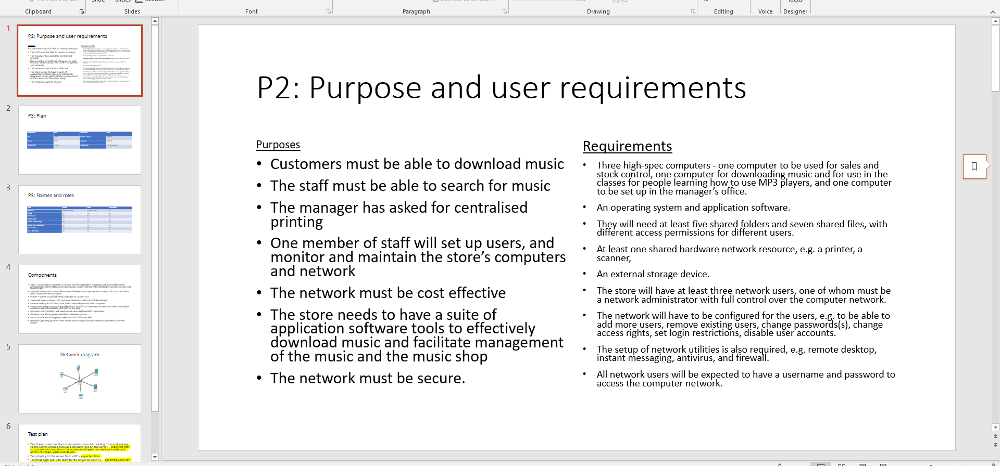
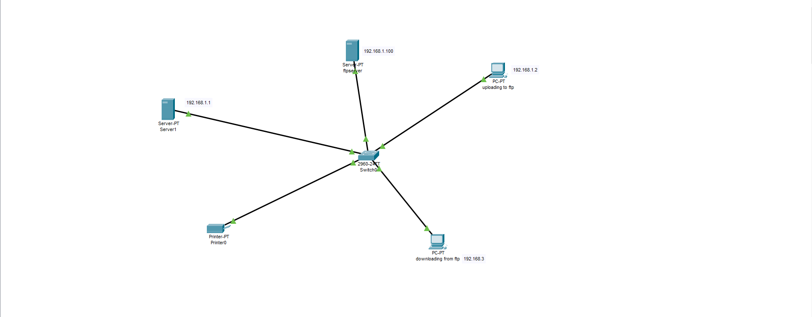

For my course for computer networks, I was given a scenario of being hired by a fake music company called First Music. My role in the scenario was to set up a network for them with usernames and passwords for admin, employee and customer accounts. To begin with I planned out the network on PowerPoint with a test plan, a network diagram, highlighting the roles of each user and calculating the costs of the different parts of the network.
I then had to create the the network using Packet Tracer, a software that allows users to plan out a network. I had a server and 2 computers with the different roles. I also created a test plan for it all on PowerPoint, highlighting the roles of each user.
